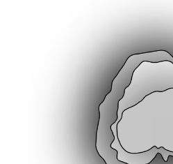

A Personal Data Portrait
A coding project aimed to document and visualize a piece of my personally tracked data
Project Details
I was tasked with personally collecting a week of personal data about myself and
representing it however I liked using p5.js, the JavaScript library for creative coding. I took inspiration
from peers and other projects online and decided to attempt to visualize my anxious habit of playing with my
hair. I tallied how many times each day I played with my hair out of nervous habit and drew it out
physically until I had a result I was interested in turning into code. The data points can be seen as the
user interacts with space around the center blob. The center blob can be changed using sliders at the bottom
and is meant to further visualize how anxiety fluctuates and changes for me throughout the week.
Image Gallery
 Data points can be spotted across the line extending from the center bubbles.
They are uneven to represent the randomness of my anxiety's random spikes.
Data points can be spotted across the line extending from the center bubbles.
They are uneven to represent the randomness of my anxiety's random spikes.

Shading around the center is used to create a dark tone for the viewer and
highlight the difference between the outer lines of data and the center bubbles.